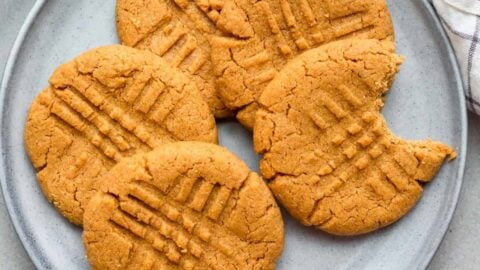

Peanut Butter Cookies

Description
These classic 3-ingredient peanut butter cookies are an irresistable family favorite. This recipe is so easy, you'll have it memorized in no time.
Ingredients
- 1 cup peanut butter
- 1 cup white sugar
- 1 large egg
Steps
- Preheat Oven: Preheat your oven to 350°F (175°C).
- Mix: In a large mixing bowl, mix peanut butter, sugar, and egg together using an electric mixer until smooth and creamy.
- Roll: Roll mixture into 1-inch balls and place 1 inch apart on an ungreased baking sheet.
- Flatten: Flatten each ball with a fork, making a cross-cross pattern.
- Bake: Bake in the preheated oven until edges are firm, about 10 minutes.
- Cool: Cool on the baking sheet briefly before removing to a wire rack to cool completely, then enjoy!